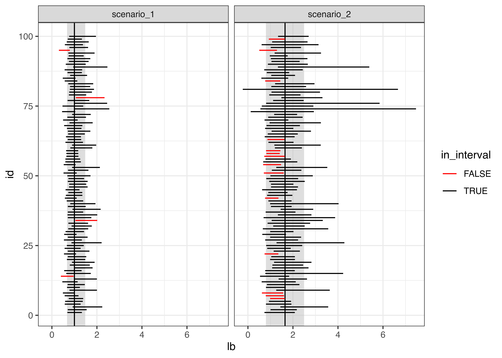
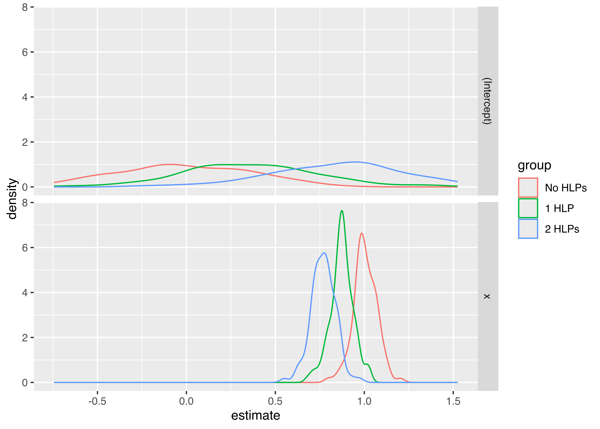
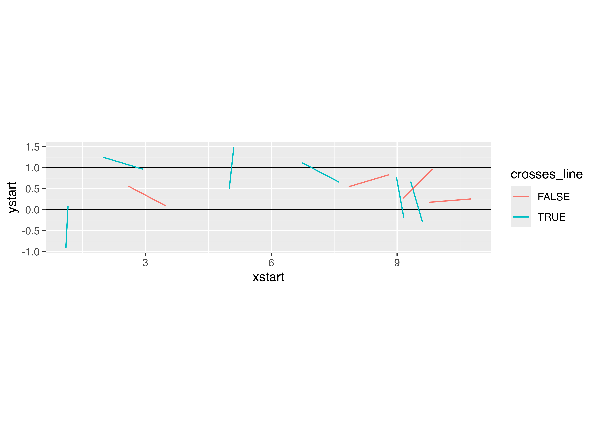
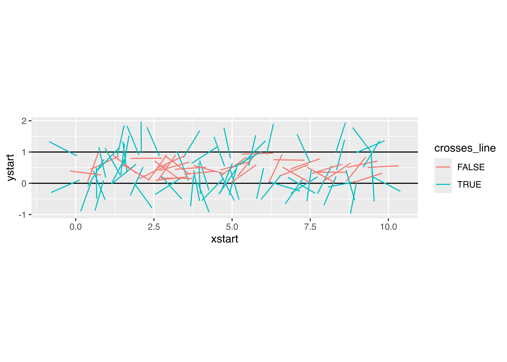
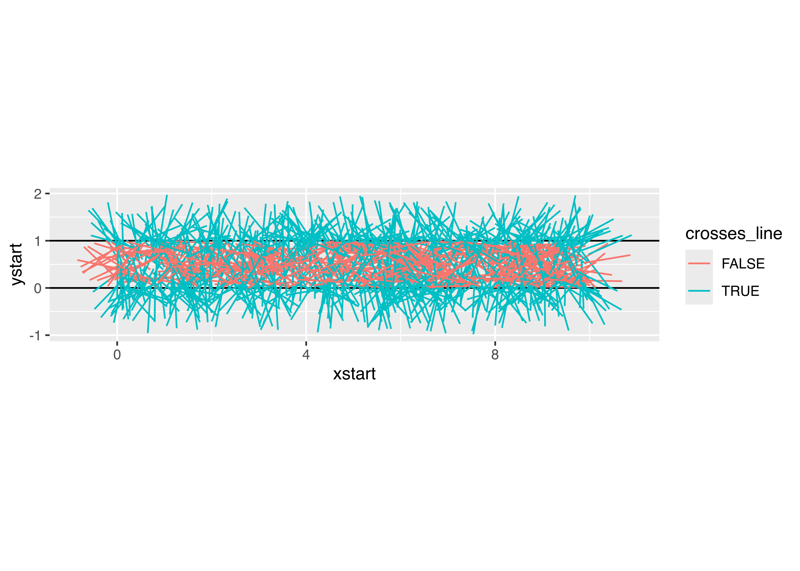
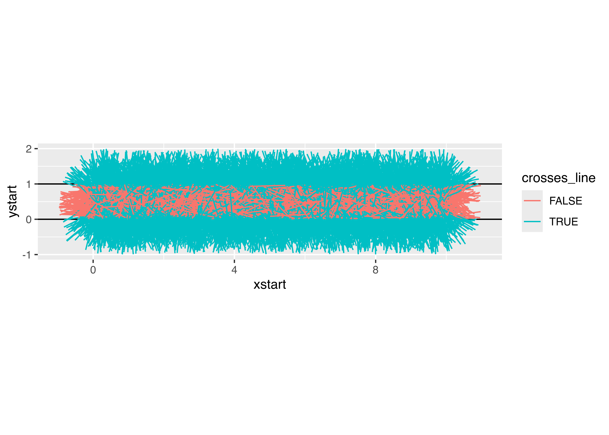
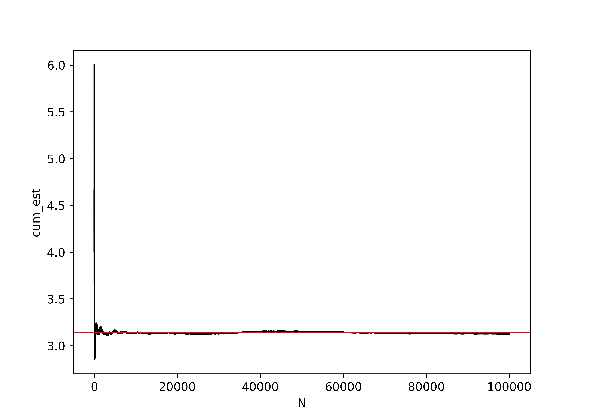

31 Simulation and Reproducibility
31.1 Objectives
- Understand the limitations of pseudorandom number generation
- Understand the connection between sampling methods such as inverse probability sampling and rejection sampling and theoretical statistics
- Implement sampling methods as required for distributions that do not have closed form approximations
- Use Monte Carlo methods for integration and other simulation tasks
- Determine the appropriate data structure to use for storing simulation task results
Simulation is an extremely important part of computational statistics. Bayesian statistics, in particular, relies on Markov Chain Monte Carlo (MCMC) to get results from even the most basic of models. In this module, we’re going to touch on a few foundational pieces of simulation in computing. Hopefully, you will get more exposure to simulation in both theory and methods courses down the line.
31.2 Pseudorandom Number Generation
Computers are almost entirely deterministic, which makes it very difficult to come up with “random” numbers. In addition to the deterministic nature of computing, it’s also somewhat important to be able to run the same code and get the same results every time, which isn’t possible if you rely on truly random numbers.
Historically, pseudorandom numbers were generated using linear congruential generators (LCGs) [1]. These algorithms aren’t typically used anymore, but they provide a good demonstration of how one might go about generating numbers that seem “random” but are actually deterministic. LCGs use modular arithmetic: \[X_{n+1} = (aX_n + c) \mod m\] where \(X_0\) is the start value (the seed), \(a\) is the multiplier, \(c\) is the increment, and \(m\) is the modulus. When using a LCG, the user generally specifies only the seed.

The important thing to note here is that if you specify the same generator values (\(a\), \(c\), \(m\), and \(X_0\)), you will always get the same series of numbers. Since \(a\), \(c\), \(m\) are usually specified by the implementation, as a user, you should expect that if you specify the same seed, you will get the same results, every time.
It is critically important to set your seed if you want the results to be reproducible and you are using an algorithm that depends on randomness.
Once you set your seed, the remaining results will only be reproducible if you generate the same amount of random numbers every time.
I once helped a friend fit a model for their masters thesis using Simulated Annealing (which relies on random seeds). We got brilliant results, but couldn‚Äôt ever reproduce them, because I hadn‚Äôt set the seed first and we never could figure out what the original seed was. üò≠
import random
import numpy as np
# Create a random generator with a specific seed
rng = np.random.default_rng(342512)
# Generate 10 integers
rng.integers(low = 1, high = 100, size = 10)
## array([18, 43, 71, 4, 35, 26, 41, 91, 42, 13])
# Generate 500 std normal draws and take the mean
np.mean(rng.standard_normal(500))
## np.float64(-0.008197259441979758)
# Get 10 more numbers
rng.integers(low = 1, high = 100, size = 10)
## array([33, 38, 3, 95, 3, 58, 79, 3, 77, 23])Compare the results above to these results:
import random
import numpy as np
# Create a random generator with a specific seed
rng = np.random.default_rng(342512)
# Generate 10 integers
rng.integers(low = 1, high = 100, size = 10)
## array([18, 43, 71, 4, 35, 26, 41, 91, 42, 13])
# Generate 30 std normal draws and take the mean
np.mean(rng.standard_normal(30))
## np.float64(0.3016849078747997)
# Get 10 more numbers
rng.integers(low = 1, high = 100, size = 10)
## array([21, 49, 21, 99, 45, 1, 56, 70, 15, 82])Notice how the results have changed?
To make my documents more reproducible, I will sometimes set a new seed at the start of an important chunk, even if I’ve already set the seed earlier. This introduces certain “fixed points” where results won’t change immediately after I’ve re-set the seed. This is particularly important when I’m generating bootstrap estimates, fitting models, or simulating data for graphics experiments.
Pick your seed in any way you want. I tend to just randomly wiggle my fingers over the number keys, but I have also heard of people using the date in yyyymmdd format, favorite people’s birthdays, the current time in hhmmss format… basically, you can use anything, so long as it’s a valid integer.
31.3 Simulating from Probability Distributions
31.3.1 Using Built-in Simulation Functions
Often, we can get away with simulating data from a known distribution. In these cases, there is absolutely no point in DIY – use the implementation that is available in R or Python, as it will be more numerically stable and much faster due to someone else having optimized the underlying C code.
You can see the various distribution options using ?Distributions. In general, dxxx is the PDF/PMF, pxxx is the CDF, qxxx is the quantile function, and rxxx gives you random numbers generated from the distribution. (xxx, obviously, is whatever distribution you’re looking to use.)
library(tibble)
library(dplyr)
library(tidyr)
library(ggplot2)
set.seed(109025879)
tibble(
norm = rnorm(500),
gamma = rgamma(500, shape = 3, scale = 1),
exp = rexp(500, rate = 1), # R uses a exp(-ax)
t = rt(500, df = 5),
chisq = rchisq(500, 5)
) %>%
pivot_longer(1:5, names_to = "dist", values_to = "value") %>%
ggplot(aes(x = value)) + geom_density() + facet_wrap(~dist, scales = "free", nrow = 1)import random
random.seed(109025879)
import pandas as pd
import numpy as np
wide_df = pd.DataFrame({
"norm": np.random.normal(size=500),
"gamma": np.random.gamma(size=500, shape = 3, scale = 1),
"exp": np.random.exponential(size = 500, scale = 1),
"t": np.random.standard_t(df = 5, size = 500),
"chisq": np.random.chisquare(df = 5, size = 500)
})
long_df = pd.melt(wide_df, id_vars = None, var_name = "dist", value_name = "value")
from plotnine import *
p = (ggplot(long_df, aes(x = "value")) + geom_density() + facet_wrap("dist", scales="free", nrow = 1) + theme(figure_size=(10,2)))
p.show()Generate variables x and y, where x is a sequence from -10 to 10 and y is equal to \(x + \epsilon\), \(\epsilon \sim N(0, 1)\). Fit a linear regression to your simulated data (in R, lm, in Python, sklearn.linear_model’s LinearRegression).
Hint: Sample code for regression using sklearn [2].
set.seed(20572983)
data <- tibble(x = seq(-10, 10, .1),
y = x + rnorm(length(x)))
regression <- lm(y ~ x, data = data)
summary(regression)
##
## Call:
## lm(formula = y ~ x, data = data)
##
## Residuals:
## Min 1Q Median 3Q Max
## -3.14575 -0.70986 0.03186 0.65429 2.40305
##
## Coefficients:
## Estimate Std. Error t value Pr(>|t|)
## (Intercept) -0.01876 0.06869 -0.273 0.785
## x 0.99230 0.01184 83.823 <2e-16 ***
## ---
## Signif. codes: 0 '***' 0.001 '**' 0.01 '*' 0.05 '.' 0.1 ' ' 1
##
## Residual standard error: 0.9738 on 199 degrees of freedom
## Multiple R-squared: 0.9725, Adjusted R-squared: 0.9723
## F-statistic: 7026 on 1 and 199 DF, p-value: < 2.2e-16import random
import pandas as pd
import numpy as np
from sklearn.linear_model import LinearRegression
random.seed(20572983)
data = pd.DataFrame({'x': np.arange(-10, 10, .1)})
data['y'] = data.x + np.random.normal(size = data.x.size)
# Fitting the regression and predictions
# scikit-learn requires that we reshape everything into
# nparrays before we pass them into the model.fit() function.
model = LinearRegression().\
fit(data.x.values.reshape(-1, 1),\
data.y.values.reshape(-1, 1))
data['pred'] = model.predict(data.x.values.reshape(-1, 1))
# Plotting the results
import matplotlib.pyplot as plt
plt.clf()
plt.scatter(data.x, data.y)
plt.plot(data.x, data.pred, color='red')
plt.show()Simulation from different distributions can be used to determine which estimators are most appropriate for a given scenario, to determine how likely it is to observe a specific value in a sample of size \(n\), and for many other applications.
Suppose you want to determine which estimator is better - mean or median - for \(t\)-distributions with different degrees of freedom and different numbers of observations.
You consider degrees of freedom \(\nu = 2, 5, 10, 30\) and samples of size \(n = 10, 20, 30, 50\). For each sample, you calculate the mean and median, \(\hat\theta\), and you repeat this process \(N=1000\) times. You then calculate the bias of the sample estimator \(\hat\theta\) (mean, median) and the MSE of that estimator. The bias is \(\text{Bias}(\hat\theta, \theta) = \text{Bias}_\theta\left[\hat\theta\right] = E_{x|\theta}\left[\hat\theta\right]- \theta = E_{x|\theta} \left[\hat\theta - \theta\right]\). The MSE (mean squared error) of \(\hat\theta\) is \(\text{MSE}(\hat\theta) = E\left[(\hat\theta-\theta)^2\right]\). We know that the MSE is related to the bias and the variance of \(\hat\theta\): \(\text{MSE}(\hat\theta) = \left(\text{Bias}(\hat\theta,\theta)\right)^2+\text{Var}(\hat\theta)\) (the Bias-Variance tradeoff).
How can you use this information to determine which estimator is preferable in each \(\nu, n\) situation?
First, let’s conduct the simulation. I find it helpful to make a function to simulate the data and calculate the necessary quantities, and then to use the purrr package to run my function \(N\) times with each parameter set.
I always save the original simulated data, even when it’s not explicitly necessary, because I want to know exactly what results contributed, and this is the easiest way to get it. This is not the most memory efficient way to go, so if you are concerned about overflowing your computer’s memory, you might omit saving the data once you’re confident the simulation function works as planned.
library(tibble)
library(purrr)
library(tidyr)
library(dplyr)
# Write a function to draw a single sample
draw_sample <- function(n = 10, v = 2) {
my_samp <- rt(n, v)
tibble(data = list(my_samp), mean = mean(my_samp), median = median(my_samp))
}
pars <- expand_grid(n = c(10, 20, 30, 50), v = c(2, 5, 10, 30), id = 1:1000)
# Only recompute results if they're not present already
if (!file.exists("data/t-sim-results.RDS")) {
results <- pars |>
rowwise() |>
mutate(res = map2(n, v, draw_sample))
results <- unnest(results, "res")
saveRDS(results, file = "data/t-sim-results.RDS")
} else {
results <- readRDS("data/t-sim-results.RDS")
}
result_sum <- results |>
pivot_longer(mean:median, names_to = "estimator", values_to = "value") |>
group_by(n, v, estimator) |>
summarize(bias = mean(value), variance = var(value), mse = mean(value^2))Now that I have the simulation summaries, I can think about plotting the results to focus on the difference in Bias/MSE between estimators under different parameter sets. As our goal is to determine whether mean or median is preferable, we should focus on making that comparison as easy as possible by plotting mean and median lines on the same plot.
library(ggplot2)
result_sum |>
pivot_longer(bias:mse, names_to = "quantity", values_to = "value") |>
mutate(quantity = factor(quantity, levels = c("bias", "variance", "mse"), ordered = T)) |>
ggplot(aes(x = n, y = value, linetype = estimator, color = factor(v))) +
geom_line() +
guides(color = 'none') +
facet_grid(v~quantity, scales = "free_y", space = "free_y") +
xlab("Sample Size") + ylab("Expected Value") +
theme_bw()![A chart showing lines comparing the mean and median performance under simulation. The chart has three columns and four rows, with columns corresponding to the bias, variance, and mse and rows to degrees of freedom (2, 5, 10, 30) shown as rows. The y-axis of each subplot is the expected value of the corresponding measurement (bias, variance, mse), and the x-axis of each subplot is the number of observations in the sample (10, 20, 30, 50). In each subplot, there are two lines showing the mean and median. The first row is allocated much more space than subsequent rows, with y values ranging between 0 and .75, while subsequent rows range between 0 and 0.15. The lines representing bias (first column) are very flat and close to 0, though there is more variability around the 0 line when degrees of freedom = 2. The variance and MSE tend to decrease as n increases across all panels, but again when DF=2, there is more variability and the trend is less clear. When DF=2, the mean line is higher than the median line for the variance and MSE over all values of n, indicating that the variance of the mean is higher than the variance of the median (the MSE is the bias + variance, and is technically redundant here). When DF=5 and we look at the variance or MSE, the lines are very close and it is difficult to determine which estimator would be better. When DF=10 or DF=20 and we consider the variance or MSE, the median line is higher than the mean across all values of n, indicating that in these situations we would prefer the mean as an estimator over the median.](01-simulation_files/figure-html/t-dist-bias-sim-results-r-chart-1.png)
from scipy.stats import t # t distribution class
import numpy as np # mean, median
import pandas as pd
rv = t(2)
n_opts = [10, 20, 30, 50]
v_opts = [2, 5, 10, 30]
pars = [(n, v, i) for n in n_opts for v in v_opts for i in range(1000)]
# Simulate t-data for each parameter combination and iteration
# IMO, it's easier to use list comprehension for this,
# but you could absolutely write a function instead
data = [t(x[1]).rvs(x[0]) for x in pars]
median= [np.median(dat) for dat in data]
mean = [np.mean(dat) for dat in data]
# Construct a data structure to hold all results together
results = pd.DataFrame(pars, columns = ['n', 'df', 'i'])
results['data'] = data
results['median'] = median
results['mean'] = mean
def mse(x, x0=0):
return np.mean((x - x0)**2)
# summarize
res_sum = results.groupby(['n', 'df']).agg({'median': ['mean', 'var', mse], 'mean': ['mean', 'var', mse]})
# Merge column indices together
res_sum.columns = ['_'.join(col) for col in res_sum.columns]
# "Ungroup" python style
res_sum = res_sum.reset_index()
# Melt to long form
res_sum_long = pd.melt(res_sum, id_vars=['n', 'df'], var_name = 'est', value_name = 'value')
res_sum_long[['estimator', 'measure']] = res_sum_long.est.str.split("_", expand = True)
res_sum_long['measure'] = res_sum_long['measure'].str.replace('mean', 'bias', regex = True)
res_sum_long = res_sum_long.drop('est', axis = 1)Now that I have the simulation summaries, I can think about plotting the results to focus on the difference in Bias/MSE between estimators under different parameter sets. As our goal is to determine whether mean or median is preferable, we should focus on making that comparison as easy as possible by plotting mean and median lines on the same plot.
import seaborn.objects as so
import matplotlib.pyplot as plt
(
so.Plot(res_sum_long, x = "n", y = "value", linestyle = 'estimator')
.add(so.Line())
.facet('measure', 'df')
.share(y="row")
.label(x = "Sample Size", y = "Value")
.show()
)![A chart showing lines comparing the mean and median performance under simulation. The chart has three columns and four rows, with columns corresponding to the bias, variance, and mse and rows to degrees of freedom (2, 5, 10, 30) shown as rows. The y-axis of each subplot is the expected value of the corresponding measurement (bias, variance, mse), and the x-axis of each subplot is the number of observations in the sample (10, 20, 30, 50). In each subplot, there are two lines showing the mean and median. The first row has a much higher range than subsequent rows, with y values ranging between 0 and .75, while subsequent rows range between 0 and 0.15. The lines representing bias (first column) are very flat and close to 0, though there is more variability around the 0 line when degrees of freedom = 2. The variance and MSE tend to decrease as n increases across all panels, but again when DF=2, there is more variability and the trend is less clear. When DF=2, the mean line is higher than the median line for the variance and MSE over all values of n, indicating that the variance of the mean is higher than the variance of the median (the MSE is the bias + variance, and is technically redundant here). When DF=5 and we look at the variance or MSE, the lines are very close and it is difficult to determine which estimator would be better. When DF=10 or DF=20 and we consider the variance or MSE, the median line is higher than the mean across all values of n, indicating that in these situations we would prefer the mean as an estimator over the median.](01-simulation_files/figure-html/t-dist-bias-sim-results-py-chart-1.png)
Considering the results we obtained, it seems clear that when we have a very low (\(\nu<=5\)) degrees of freedom, the median is a preferable estimator because it has lower variance; when we have a higher number of degrees of freedom, the mean is a preferable estimator on the basis of variance. Both estimators are asymptotically unbiased, and are unbiased even for small sample sizes when the distribution is symmetric.
31.4 Simulating from Non-standard distributions
In some cases, you may want to simulate from a probability distribution that isn’t already implemented in your software of choice. To decide how to do this efficiently requires that you first take stock of what you actually have describing your distribution.
Do you have a:
- method for getting from a standard distribution to your distribution via e.g. censoring, combining variables, etc.?
- probability density/mass function?
- cumulative density function?
If you have a PDF/PMF, can it be integrated to get a CDF, either analytically or computationally?
If your PDF/PMF cannot be easily integrated, can you come up with a more standard distribution with a similar shape that you can use to get samples from your distribution?
If you have a method of getting from a standard distribution via censoring or combinations of variables, this is often the most intuitive way of generating a random sample from a complex distribution. In addition, this can be a good mechanism for generating distributions that mimic real-world processes that are not always natural to translate into functional probability distributions.
If you have a CDF, and the CDF can be easily inverted, it is often easiest to try inverse probability sampling first. In some cases, however, it is difficult to get an analytical form for the CDF (or the inverse CDF); in these cases, it may be preferable to work with the PDF/PMF instead. When working with a probability density or mass function, it is often natural to try rejection sampling before moving on to other methods.
31.4.1 Inverse Probability Sampling
If you have a cumulative distribution function \(F\) that is nondecreasing, you can use that \(F\) to get samples from your distribution by generating uniform random variables \(u \sim U[0,1]\) and computing \(x = F^{-1}(u)\). This method relies on the probability integral transform.
Let’s consider how this might work in the case of a distribution with the following CDF: \[F(x\leq X) = x^2, \ \ 0 < x < 1.\]
Steps:
- Generate a random number \(u \sim U[0,1]\)
- Find the inverse of the desired CDF, \(x^\ast = F^{-1}_X(u)\)
This procedure can often be done in a vectorized manner, if the CDF and inverse CDF (or quantile function) are written with vectorization in mind.
31.4.2 Rejection Sampling
In some cases, you have a PDF but not an easily obtainable or invert-able CDF. You could numerically integrate your PDF and use inverse probability sampling, but it may also be easier to use rejection sampling.
Rejection sampling, which is also sometimes called ‘acceptance-rejection’ sampling works for any distribution with a density function. Rejection sampling operates by generating random samples from a proposal distribution, and accepting those proposals with a certain probability determined by the relationship between the proposal and target distribution at that point.
It is easiest to illustrate how this works by showing a probability distribution with a defined domain (say, \([0,10]\)). In this case, I’ve created a nonstandard probability distribution by sketching a bimodal distribution on the interval and converting it to a polynomial.
Think about throwing darts at this PDF (who hasn’t wanted to do that?). Any darts that land below the line describing \(f(x)\) would be distributed uniformly within the area under the curve, and their \(x\) values would be a random sample from \(f(x)\). Rejection sampling is essentially a formalization of this idea.
In the crudest case, rejection sampling is essentially a Monte Carlo sampling method – we generate random proposals from \(\mathbb{R}^n\) and reject anything outside of our probability density. But, we can usually improve over generating over the full \(\mathbb{R}^n\) – in most cases, we can find a better proposal space. In Figure 31.4, we generated 2000 points and rejected 1034 of those points, for an acceptance rate of 48.3%.
But, what if we were a bit smarter about how we proposed points? Bimodal distributions are irritating, because there’s always that space in the middle between the modes, but, what if we could at least not “throw darts” at the top corners?
The idea here is to get an “envelope distribution” - a function that is greater than or equal to \(f(x)\) at every point where \(f(x) > 0\), and use that function to generate a proposal value. Then, we can accept or reject that proposal value based on the relationship between our envelope distribution and \(f(x)\). This is essentially the same thing that we did before, but our “envelope” was very rectangular.
What is interesting is that we can generate an “envelope distribution” from a distribution that isn’t, strictly speaking, greater than \(f(x)\), by using some fancy scaling.
An envelope distribution \(g(x)\) can be used for rejection sampling if \(\displaystyle \frac{f(x)}{g(x)} \leq M\) for some constant \(M<\infty\).
Steps:
- Generate \(u\sim U[0,1]\)
- Generate \(x\sim g(x)\), a proposal value
- Accept \(x\) if \(u < \displaystyle\frac{f(x)}{M g(x)}\); otherwise, start over.
![A three-panel figure showing the same bimodal PDF with unspecified form over 0 < x < 10. The first panel shows only the PDF and a proposal density that has a similar shape to the original. The second panel shows the ratio between the proposal and the original density, with the maximum value shown as a horizontal line indicating the value of the constant $M$. The third panel shows dots under M g(x), with those which are also under f(x) shown as blue triangles, where those above f(x) are shown as red circles. The blue triangles represent a sample from $f(x)$](01-simulation_files/figure-html/fig-rejection-better-sketch-1.png)
In Figure 31.5, where the proposal density is a mixture of two truncated normal densities, we generated 2000 points and rejected 390 of those points, for an acceptance rate of 80.5%. I’m entirely sure I could get the proposal density much closer to \(f(x)\) if necessary, but it’s better to be able to illustrate how the process works. It is possible to use any given \(M\) for the proposal density, so long as the \(M\) you use meets the condition of \(M \geq \frac{f(x)}{g(x)}\) for all \(x\) with \(P(x) > 0\). Using a larger \(M\) will simply decrease the acceptance probability, which will be less efficient but will still produce a valid sample.
31.5 Simulation to test model assumptions
One of the more powerful ways to use simulation in practice is to use it to test the assumptions of your model. Suppose, for instance, that your data are highly skewed, but you want to use a method that assumes normally distributed errors. How bad will your results be? Where can you trust the results, and where should you be cautious?
The purrr::map notation specifies that we are using the map function from the purrr package. When functions are named generically, and there may be more than one package with a function name, it is often more readable to specify the package name along with the function.
purrr::map takes an argument and for each “group” calls the compute_interval function, storing the results in res. So each row in res is a 1x2 tibble with columns lb and ub.
This pattern is very useful in all sorts of applications. You can read more about purrr in Chapter 29.
Suppose, for instance, that we have a lognormal distribution (highly skewed) and we want to compute a 95% confidence interval for the mean of our 25 observations.
You want to assess the coverage probability of a confidence interval computed under two different modeling scenarios:
- Working with the log-transformed values, ln(x), and then transform the computed interval back
- Working with the raw values, x, compute an interval assuming the data are symmetric, essentially treating the lognormal distribution as if it were normal.
Scenario 1:
- the expected value of the standard normal deviates is 0
- the variance of the data is 1
- the SE(\(\overline x\)) is \(\sqrt\frac{1}{25} = \frac{1}{5}\)
Our theoretical interval should be \((\exp(-1.96/5), \exp(1.96/5)) = (0.6757, 1.4799)\).
Scenario 2
- The expected value of the lognormal distribution is \(\exp(1/2) = 1.6487213\)
- The variance of the data is \((\exp(1) - 1)(\exp(1)) = 4.6707743\)
- The SE(\(\overline x\)) is thus \(\sqrt{\frac{(e^1 - 1)e^1}{25}} = \frac{\sqrt{(e^1 - 1)e^1}}{5} = 0.4322\)
Our theoretical interval should be \((0.8015, 2.4959)\). This interval could, if the circumstances were slightly different, contain 0, which is implausible for lognormally distributed data.
Our expected values are different under scenario 1 and scenario 2:
- In scenario 1 we are computing an interval for \(\mu\)
- In scenario 2, we are computing an interval for the population mean, which is \(\exp(\mu + .5\sigma^2)\)
Both are valid quantities we might be interested in, but they do not mean the same thing.
set.seed(40295023)
sim <- tibble(
id = rep(1:100, each = 25), # generate 100 samples of 25 points each
ln_x = rnorm(25*100), # generate 25 normal deviates for each sample
x = exp(ln_x), # transform into lognormal deviates
) %>%
# this creates a 100-row data frame, with one row for each id.
# the columns x, ln_x are stored in the data list-column as a tibble.
nest(data = c(x, ln_x))
head(sim)
## # A tibble: 6 × 2
## id data
## <int> <list>
## 1 1 <tibble [25 × 2]>
## 2 2 <tibble [25 × 2]>
## 3 3 <tibble [25 × 2]>
## 4 4 <tibble [25 × 2]>
## 5 5 <tibble [25 × 2]>
## 6 6 <tibble [25 × 2]>
sim$data[[1]]
## # A tibble: 25 × 2
## x ln_x
## <dbl> <dbl>
## 1 0.310 -1.17
## 2 0.622 -0.475
## 3 0.303 -1.19
## 4 1.05 0.0525
## 5 0.529 -0.636
## 6 1.09 0.0891
## 7 1.97 0.676
## 8 8.94 2.19
## 9 0.598 -0.514
## 10 0.183 -1.70
## # ℹ 15 more rowscompute_interval <- function(x) {
s1 <- exp(mean(log(x)) + c(-1, 1) * qnorm(.975) * sd(log(x))/sqrt(length(x)))
s2 <- mean(x) + c(-1, 1) * qnorm(.975) * sd(x)/sqrt(length(x))
tibble(scenario = c("scenario_1", "scenario_2"),
mean = c(1, exp(1/2)),
lb = c(s1[1], s2[1]), ub = c(s1[2], s2[2]),
in_interval = (lb < mean) & (ub > mean))
}
sim_long <- sim %>%
# This line takes each data entry and computes an interval for x.
# .$x is code for take the argument you passed in to map and get the x column
mutate(res = purrr::map(data, ~compute_interval(.$x))) %>%
# this "frees" res and we end up with two columns: lb and ub, for each scenario
unnest(res)
ci_df <- tibble(scenario = c("scenario_1", "scenario_2"),
mu = c(1, exp(1/2)),
lb = c(exp(-1.96/5), exp(.5) - 1.96*sqrt((exp(1) - 1)*exp(1))/5),
ub = c(exp(1.96/5), exp(.5) + 1.96*sqrt((exp(1) - 1)*exp(1))/5))ggplot() +
geom_rect(aes(xmin = lb, xmax = ub, ymin = -Inf, ymax = Inf),
data = ci_df,
fill = "grey", alpha = .5, color = NA) +
geom_vline(aes(xintercept = mu), data = ci_df) +
geom_segment(aes(x = lb, xend = ub, y = id, yend = id, color = in_interval),
data = sim_long) +
scale_color_manual(values = c("red", "black")) +
theme_bw() +
facet_wrap(~scenario)
From this, we can see that working with the log-transformed, normally distributed results has better coverage probability than working with the raw data and computing the population mean: the estimates in the latter procedure have lower coverage probability, and many of the intervals are much wider than necessary; in some cases, the interval actually lies outside of the domain.
Here is a similar example worked through in SAS with IML. Note the use of BY-group processing to analyze each group at once - this is very similar to the use of purrr::map() in the R code.
Multilevel regression and post-stratification simulation with toddler bedtimes [3]
This example talks about how to take a biased sample and then recover the original unbiased estimates – which is something you have to test using simulation to be sure it works, because you never actually know what the true population features are when you are working with real world data. When reading this example, you may not be all that interested with the specific model - but focus on the process of simulating data for your analysis so that you understand how and why you would want to simulate data in order to test a computational method.
What happens if we have one high-leverage point (e.g. a point which is an outlier in both x and y)? How pathological do our regression coefficient estimates get?
The challenging part here is to design a data generating mechanism.
gen_data <- function(o = 1, n = 30, error_sd = 2) {
# generate the main part of the regression data
data <- tibble(x = rnorm(n = n - o,
mean = seq(-10, 10, length.out = n - o),
sd = .1),
y = x + rnorm(length(x),
mean = 0,
sd = error_sd))
# generate the outlier - make it at ~(-10, 5)
outdata <- tibble(x = rnorm(o, -10), y = rnorm(o, 5, error_sd))
bind_rows(data, outdata)
}
sim_data <- crossing(id = 1:100, outliers = 0:2) %>%
mutate(
# call gen_data for each row in sim_data,
# but don't use id as a parameter.
data = purrr::map(outliers, gen_data)
)head(sim_data)
## # A tibble: 6 × 3
## id outliers data
## <int> <int> <list>
## 1 1 0 <tibble [30 × 2]>
## 2 1 1 <tibble [30 × 2]>
## 3 1 2 <tibble [30 × 2]>
## 4 2 0 <tibble [30 × 2]>
## 5 2 1 <tibble [30 × 2]>
## 6 2 2 <tibble [30 × 2]>
# plot a few datasets just to check they look like we expect:
sim_data %>%
filter(id %% 100 < 3) %>%
unnest(data) %>%
ggplot(aes(x = x, y = y)) +
geom_point() +
facet_grid(id ~ outliers, labeller = label_both)# Get the coefficients out
tidy_coefs <- select(sim_data, id, outliers, tidy_model) %>%
unnest(tidy_model) %>%
mutate(group = case_when(outliers == 0 ~ "No HLPs",
outliers == 1 ~ "1 HLP",
outliers == 2 ~ "2 HLPs") %>%
factor(levels = c("No HLPs", "1 HLP", "2 HLPs")))
ggplot(tidy_coefs, aes(x = estimate, color = group)) +
facet_grid(term ~ .) +
geom_density()
Obviously, you should experiment with different methods of generating a high-leverage point (maybe use a different distribution?) but this generating mechanism is simple enough for our purposes and shows that the addition of high leverage points biases the true values (slope = 1, intercept = 0).
Let’s explore what happens to estimates when certain observations are censored.
Suppose we have a poorly-designed digital thermometer which cannot detect temperatures above 102\(^\circ F\); for these temperatures, the thermometer will record a value of 102.0.
It is estimated that normal body temperature for dogs and cats is 101 to 102.5 degrees Fahrenheit, and values above 104 degrees F are indicative of illness. Given that you have this poorly calibrated thermometer, design a simulation which estimates the average temperature your thermometer would record for a sample of 100 dogs or cats, and determine the magnitude of the effect of the thermometer’s censoring.
If most pets have a normal body temperature between 101 and 102.5 degrees, can you use these bounds to determine appropriate parameters for a normal distribution? What if you assume that 101 and 102.5 are the 2SD bounds?
If 101 and 102.5 are the anchor points we have, let’s assume that 95% of normal pet temperatures fall in that range. So our average temperature would be 101.75, and our standard deviation would be .75/2 = 0.375.
We can simulate 1000 observations from \(N(101.75, 0.375)\), create a new variable which truncates them at 102, and compute the mean of both variables to determine just how biased our results are.
The effect of the thermometer’s censoring is around 0.06 degrees F for animals that are not ill.
import numpy as np
import pandas as pd
import random
random.seed(204209527)
dogtemp = pd.DataFrame({
"actual": np.random.normal(size = 1000, loc = 101.75, scale = 0.375)
})
dogtemp['read'] = np.minimum(dogtemp.actual, 102)
np.diff(dogtemp.mean())
## array([-0.05440603])The effect of the thermometer’s censoring is around 0.06 degrees F for animals that are not ill.
31.6 Monte Carlo methods
Monte carlo methods [4] are methods which rely on repeated random sampling in order to solve numerical problems. Often, the types of problems approached with MC methods are extremely difficult or impossible to solve analytically.
In general, a MC problem involves these steps:
- Define the input domain
- Generate inputs randomly from an appropriate probability distribution
- Perform a computation using those inputs
- Aggregate the results.
Let’s try it out by using MC simulation to estimate the number of uniform (0,1) random variables needed for the sum to exceed 1.
More precisely, if \(u_i \sim U(0,1)\), where _{i=1}^k u_i > 1, what is the expected value of \(k\)?
- In this simulation, our input domain is [0,1].
- Our input is \(u_i \sim U(0,1)\)
- We generate new \(u_i\) until \(\sum_{i=1}^k > 1\) and save the value of \(k\)
- We average the result of \(N\) such simulations.
# It's easier to think through the code if we write it inefficiently first
sim_fcn <- function() {
usum <- 0
k <- 0
# prevent infinite loops by monitoring the value of k as well
while (usum < 1 & k < 15) {
usum <- runif(1) + usum
k <- k + 1
}
return(k)
}
set.seed(302497852)
res <- tibble(k = replicate(1000, sim_fcn(), simplify = T))
mean(res$k)
## [1] 2.717If we want to see whether the result converges to something, we can increase the number of trials we run:
import numpy as np
import random
import pandas as pd
def sim_fcn():
usum = 0
k = 0
# prevent infinite loops by monitoring the value of k as well
while usum < 1 and k < 15:
# print("k = ", k)
usum = np.random.uniform(size=1) + usum
k += 1
return k
random.seed(302497852)
res = pd.DataFrame({"k": [sim_fcn() for _ in range(1000)]})If we want to see whether the result converges to something, we can increase the number of trials we run:
random.seed(20417023)
sim_res = pd.DataFrame({"k": [sim_fcn() for _ in range(250000)]})
sim_res['running_avg_est'] = sim_res.k.expanding().mean()
sim_res['N'] = np.arange(len(sim_res))
import seaborn as sns
import matplotlib.pyplot as plt
plt.clf()
graph = sns.lineplot(data = sim_res, x = 'N', y = 'running_avg_est', color = "black")
graph.axhline(y = np.exp(1), xmin = 0, xmax = 1, color = "red")
plt.show()
The expected number of uniform RV draws required to sum to 1 is \(e\)!
Monte Carlo methods are often used to approximate the value of integrals which do not have a closed-form (in particular, these integrals tend to pop up frequently in Bayesian methods).
Suppose you want to integrate \[\int_0^1 x^2 \sin \left(\frac{1}{x}\right) dx\]

You could set up Riemann integration and evaluate the integral using a sum over \(K\) points, but that approach only converges for smooth functions (and besides, that’s boring Calc 2 stuff, right?).
Instead, let’s observe that this is equivalent to \(\int_0^1 x^2 \sin \left(\frac{1}{x}\right) \cdot 1 dx\), where \(p(x) = 1\) for a uniform random variable. That is, this integral can be written as the expected value of the function over the interval \([0,1]\). What if we just generate a bunch of uniform(0,1) variables, evaluate the value of the function at those points, and average the result?
You can use the law of large numbers to prove that this approach will converge. [5]
random.seed(20491720)
def fn(x):
return x**2 * np.sin(1/x)
sim_data = pd.DataFrame({"x": np.random.uniform(size = 100000)})
sim_data['y'] = fn(sim_data.x)
sim_data.y.mean()
## np.float64(0.2876618146301583)Let’s say that you want to find an estimate for \(\pi\), and you know that a circle with radius 1 has an area of exactly that. You also know, that all of the points on this circle can be written as \(x^2 + y^2 \le 1\).
Evaluating the area of the circle mathematically, would need us to either change to polar-coordinates or separate the graph into suitable functions (half-circles), and evaluate the integral between the top and the bottom: \[ \int_{-1}^1 2 \sqrt{1-x^2} dx \] Instead, we note that the circle is encapsulated in a square with side length 2. We can reach all points in that square by using two independent uniform random random variables over the interval \([-1,1]\), i.e. when we generate two random values from U[-1,1], and use one as the \(x\) coordinate and one as the \(y\) coordinate, we get a point in the square. If the sum of the squares of the coordinates are less than 1, the point will also fall inside the circle. If not, the point falls in one of the four corners of the square that are outside the circle.
How do we get to an estimate of \(\pi\) from there? We know that the area of the square is simply \(2^2 = 4\). The area of the circle is then directly proportional to the rate at which points fall into the circle, ie.
\[ \hat{\pi} = 4 \times \frac{\text{Number of points with } x^2+y^2 \le 1}{\text{Number of points generated}}. \] The more points we generate, the closer our estimate will be to the real value.
This problem is an example for Monte-Carlo Integration using an Acceptance-Rejection approach: we can slightly re-write the simulation and think of the generation of a new point in the circle as a two step process, where we first generate a value for \(x\) from U[-1,1], and in second step generate a candidate \(c\) for \(y\) from U[-1, 1], which we will only accept as \(y\), if \(|c| \le \sqrt{1-x^2}\). Acceptance-Rejection sampling is the basis of a lot of Markov-Chain Monte-Carlo (MCMC) methods, such as e.g. the Metropolis-Hastings algorithm.
set.seed(20491720)
calculate_pi <- function(R) {
x = runif(R, min=-1, max=1)
y = runif(R, min=-1, max=1)
in_circle = x^2+y^2<1
4 * sum(in_circle) / R
}
# Quite a bit of variability with just 100 values
calculate_pi(100)
## [1] 3.16
calculate_pi(100)
## [1] 3.2
calculate_pi(100)
## [1] 2.96
# Better with 10,000
calculate_pi(10000)
## [1] 3.126
calculate_pi(10000)
## [1] 3.1392
# Better, but still only good for about 2-3 digits
calculate_pi(1000000)
## [1] 3.14344
pi
## [1] 3.1415927random.seed(20491720)
def calculate_pi(R):
x = np.random.uniform(size = R)
y = np.random.uniform(size = R)
in_circle = x**2+y**2<1
return 4 * sum(in_circle) / R
# Quite a bit of variability with just 100 values
calculate_pi(100)
## np.float64(3.2)
calculate_pi(100)
## np.float64(3.04)
calculate_pi(100)
## np.float64(3.4)
# Better with 10,000
calculate_pi(10000)
## np.float64(3.1292)
calculate_pi(10000)
## np.float64(3.1488)
# Better, but still only good for about 2-3 digits
calculate_pi(1000000)
## np.float64(3.139)
np.pi
## 3.141592653589793Buffon’s needle is a mathematical problem which can be boiled down to a simple physical simulation. Read this science friday description of the problem and develop a monte carlo simulation method which estimates \(\pi\) using the Buffon’s needle method. Your method should be a function which
- allows the user to specify how many sticks are dropped
- plots the result of the physical simulation
- prints out a numerical estimate of pi.
Let’s start out with horizontal lines at 0 and 1, and set our stick length to 1. We need to randomly generate a position (of one end of the stick) and an angle. The position in \(x\) doesn’t actually make much of a difference (since what we care about is the \(y\) coordinates), but we can draw a picture if we generate \(x\) as well.
needle_sim <- function(sticks = 100) {
df <- tibble(xstart = runif(sticks, 0, 10),
ystart = runif(sticks, 0, 1),
angle = runif(sticks, 0, 360),
xend = xstart + cos(angle/180*pi),
yend = ystart + sin(angle/180*pi)
) %>%
# We can see if a stick crosses a line if the floor() function of ystart is
# different than floor(yend).
# Note this only works for integer line values.
mutate(crosses_line = floor(ystart) != floor(yend))
gg <- ggplot() +
geom_hline(yintercept = c(0, 1)) +
geom_segment(aes(x = xstart, y = ystart, xend = xend, yend = yend,
color = crosses_line), data = df) +
coord_fixed()
return(list(est = 2 * sticks / sum(df$crosses_line), plot = gg))
}
needle_sim(10)
## $est
## [1] 3.3333333
##
## $plot
needle_sim(100)
## $est
## [1] 3.125
##
## $plot
needle_sim(1000)
## $est
## [1] 3.1446541
##
## $plot
needle_sim(10000)
## $est
## [1] 3.1730922
##
## $plot
def needle_sim(sticks = 100):
df = pd.DataFrame({
"xstart": np.random.uniform(0, 10, size = sticks),
"ystart": np.random.uniform(0, 1, size = sticks),
"angle": np.random.uniform(0, 360, size = sticks)
})
df['xend'] = df.xstart + np.cos(df.angle/180*np.pi)
df['yend'] = df.ystart + np.sin(df.angle/180*np.pi)
df['crosses_line'] = np.floor(df.ystart) != np.floor(df.yend)
return df
data = needle_sim(100000)
data['N'] = np.arange(len(data)) + 1
data['cum_est'] = 2*data.N / data.crosses_line.expanding().sum()
import seaborn as sns
import matplotlib.pyplot as plt
plt.clf()
graph = sns.lineplot(data = data, x = "N", y = "cum_est", color = "black")
graph.axhline(y = np.pi, xmin = 0, xmax = 1, color = "red")
plt.show()
31.7 Other Resources
Simulation (R programming for Data Science chapter)
Simulation - R Studio lesson
Simulating Data with SAS (Excerpt)